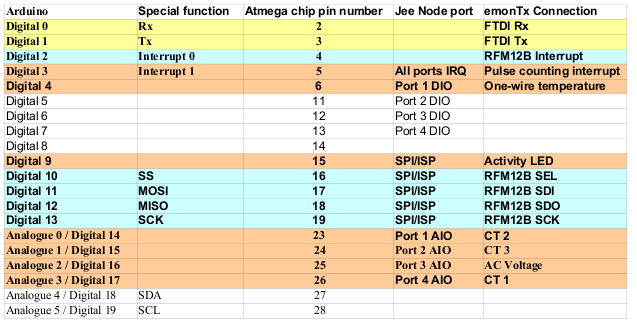

I recently bought an eMonTx Arduino shield SMT version, and I am eager to read results. This is my configuration:
- Arduino Uno R3
- eMonTx Shield
- No RFM module
- Standard sensors for Continental Europe from the shop: 3 x YHDC Split-Core current Transformer and 1 x Ideal 230Vac/9Vac power converter
I soldered all the headers following the guide, I plug the shield in my Arduino, I plugged the AC Adaptor for a first Voltage measure, loaded the EmonLib in my Arduino IDE and then run the simplest sketch, below.
First of all, no led blinks, I can see that there is a Surface LED, that blinks in the OpenEnergyMonitor video examples. I suspected this was a hardware issue, and reviewed with a Multimeter the soldered pin connections. All of them seem to be OK, Most of the PINS are not connected, a few of them gives a resistance of 70 Ohms, one of them 35 Ohms. There is something strange: the GND pins are not connected in the EmonTx shield, however they are connected through the Arduino One board.
Next step is to review the software, I can compile, load and run the sketch above, and I can see that the Sketch is running. This is the result I can monitor using the Serial:
18187.52
1.13
0.01
0.00
0.02
0.00
0.03
0.02
0.02
0.00
0.00
0.02
0.02
0.00
0.00
0.00
0.00
0.00
0.00
0.00
0.00
0.00
etc
My question are, if you see something wrong in my configuration, How can I track a Hardware problem?, and a Software?,
Thank you in advanced
// EmonLibrary examples openenergymonitor.org, Licence GNU GPL V3
#include "EmonLib.h" // Include Emon Library
EnergyMonitor emon1; // Create an instance
void setup()
{
Serial.begin(9600);
emon1.voltage(2, 234.26, 1.7); // Voltage: input pin, calibration, phase_shift
emon1.current(1, 111.1); // Current: input pin, calibration.
}
void loop()
{
emon1.calcVI(20,2000); // Calculate all. No.of half wavelengths (crossings), time-out
// emon1.serialprint(); // Print out all variables (realpower, apparent power, Vrms, Irms, power factor)
float realPower = emon1.realPower; //extract Real Power into variable
float apparentPower = emon1.apparentPower; //extract Apparent Power into variable
float powerFActor = emon1.powerFactor; //extract Power Factor into Variable
float supplyVoltage = emon1.Vrms; //extract Vrms into Variable
float Irms = emon1.Irms; //extract Irms into Variable
Serial.println(supplyVoltage);
}
Re: eMonTX Arduino Shield: Problem getting started
First, there is nothing in your sketch to blink the LED. Second, your pin numbers appear to be wrong. The voltage input is on pin 0, not pin 2.
Can I suggest you first look at one of the proven emonTx Shield sketches from GitHub, e.g. https://github.com/openenergymonitor/emonTxFirmware/blob/master/emonTxSh...
The safest way to proceed is probably to download and try that sketch. The note is misleading - it is not a 3-phase sketch.
Re: eMonTX Arduino Shield: Problem getting started
Thank you for your answer that helped to understand the eMonTx Shield. I followed your advices and I immediately got a blinking LED, and a voltage lecture. I need now to calibrate my measurement.
I found that the documentation is a little bit basic, for example there is no a clear Shield pinout explanation, There is however a Portmap description for the eMonTX v2, that maybe is identical:
http://openenergymonitor.org/emon/emontx/reference

I can see in the board printed the following:
Can you confirm me that the displayed portmap for eMonTx v2 is compatible with the eMonTx shield?
Re: eMonTX Arduino Shield: Problem getting started
No, The Shield is not the same as the V2. But you don't need that for calibration. All you need to know is actually in that example sketch, near the top:
16 const int LEDpin = 9;
...
28 ct1.current(1, 60.606);
29 ct2.current(2, 60.606);
30 ct3.current(3, 60.606);
31 ct4.current(4, 60.606);
32
33 // (ADC input, calibration, phase_shift)
34 ct1.voltage(0, 300.6, 1.7);
35 ct2.voltage(0, 300.6, 1.7);
36 ct3.voltage(0, 300.6, 1.7);
37 ct4.voltage(0, 300.6, 1.7);
Those lines tell me that the LED is on pin 9, The voltage is AI 0, and the four current inputs are AI1-4.
If you find the emonTx Shield on the Wiki, there's a link there to the schematic diagram on Solderpad. On that you can see exactly how the Shield is wired.
Re: eMonTX Arduino Shield: Problem getting started
Thank you, I am now reading voltage/Ampere in a single phase configuration. However all the sketches are for three-phase systems, I hope it is not a problem to use only one Current Transformer.
I have another measuring system (YHDC sensors providing 0-5Vdc directly to another Arduino One, no calculation of apparent/active power), and it reports me around the following numbers approx.: 230Vac, 0,3Amp, 69W.
My eMonTX shield is reporting very different figures: Voltage around 300Vac, Intensity 100.43A
emonTX Shield CT123 Voltage Serial Only exampleOpenEnergyMonitor.org
100.43 84.39 481.25 286.75 297.53
120.66 44.67 288.44 110.33 298.96
123.29 -8.73 52.19 25.17 299.93
131.42 57.89 20.89 44.03 298.76
133.35 34.85 -26.78 43.78 298.82
129.35 23.67 -19.24 30.07 300.80
118.10 14.35 -13.13 10.89 297.02
125.36 11.78 -10.60 10.61 298.84
Both numbers seem to be very far away, I don't think it is only a calibration issue.
The sketches are valid only for 3-phase systems?
Maybe the problem is because I am powering the Arduino ONE through the USB connector?
What steps do you recommend me?
Re: eMonTX Arduino Shield: Problem getting started
"However all the sketches are for three-phase systems..."
Not true, you must be looking in the wrong place. Here: https://github.com/openenergymonitor/emonTxFirmware/tree/master/emonTxSh... only the second one (Shield_CT1234_3Phase_Voltage) is 3-phase. All the rest are standard single phase.
A three-phase sketch will give very peculiar results on CTs 2 & 3 on a single-phase system - half power and power factor of -0.5 for a resistive load to be precise.
1. Have you built your emonTx Shield exactly as per the instructions and the circuit diagram?
2. Your voltage is clearly wrong at ~300 V. What is your supply voltage? Which ac adapter are you using?
3. Which CT are you using?
4. Have you tried to follow the calibration procedure: http://openenergymonitor.org/emon/buildingblocks/calibration
5. The first three numbers are real power, not current, so you are reading ~120 W on CT1, and probably noise on CT 2-4.
Re: eMonTX Arduino Shield: Problem getting started
I was indeed looking at the wrong GITHUB place, for the second time. I think a startup guide is needed, at least for the Shield board.
I have now more coherent results although still not fully happy. My calibration was wrong. I have the IDEAL AC Adapter Euro version, calibration parameter should be 260.0 according the calibration documentation, however I had to write 230 to get good results.
emonTX Shield CT123 Voltage Serial Only exampleOpenEnergyMonitor.org
134.07 225.17 158.28 374.97 226.57
115.37 223.91 32.25 247.09 226.22
116.26 108.74 -20.56 135.01 226.07
107.90 72.19 -15.14 90.83 227.10
135.79 33.89 -34.44 34.95 227.21
115.32 26.28 -22.12 23.76 226.24
98.94 12.12 -13.00 13.26 226.51
123.13 10.93 -8.37 10.59 226.96
115.10 3.73 -5.63 2.88 226.00
134.72 3.26 -2.55 4.02 225.83
137.38 1.59 -1.82 2.05 227.77
124.39 1.12 -0.88 1.15 226.34
Then I get some measurement similar to my another system, only the real power is around 15% bigger, but this could be the difference between apparent and real/active power.
I will start studying in bigger detail the documentation, I will log the data and compare both measuring system.
Thank you for your orientation
Re: eMonTX Arduino Shield: Problem getting started
No, real power can never be greater than apparent power. You need to check your current calibration. Are you using the YHDC SCT-013-000, and did you use the burden resistors supplied with your Shield?